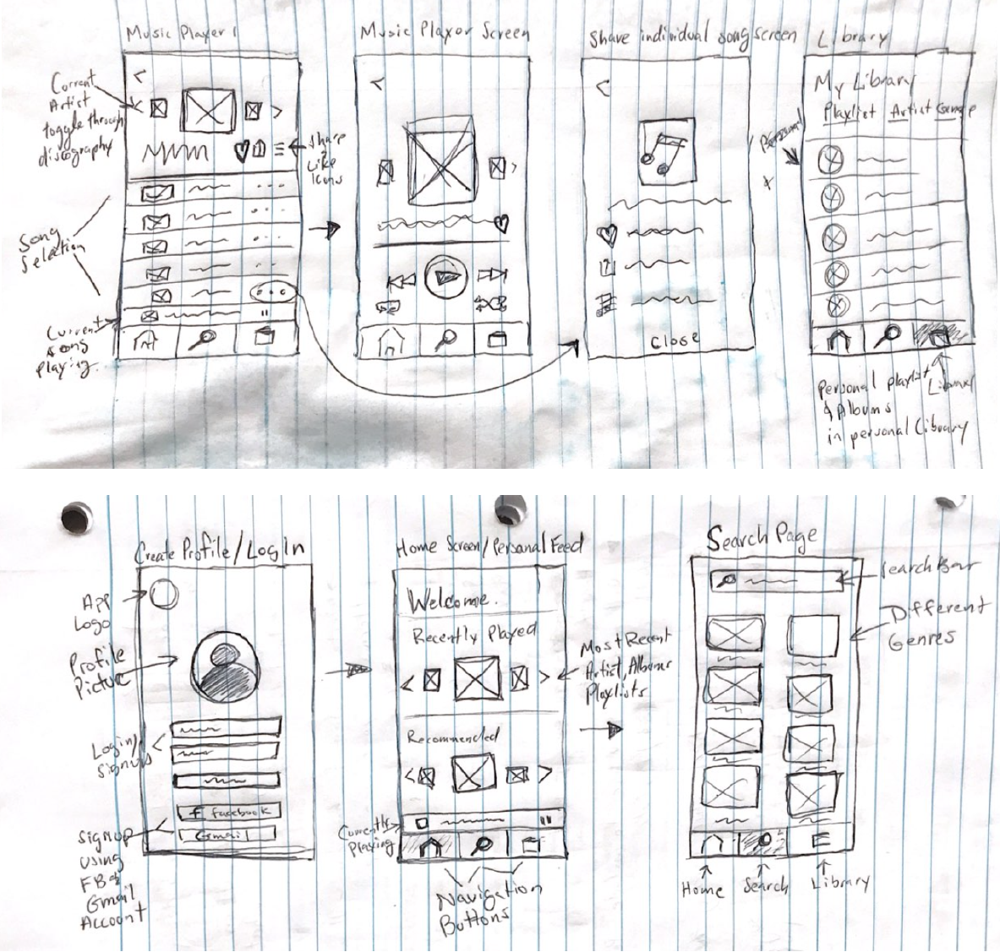
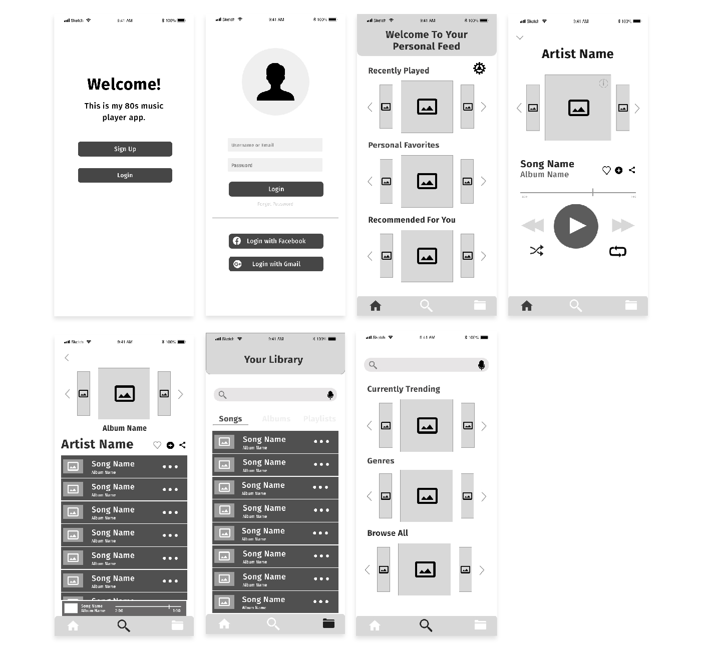
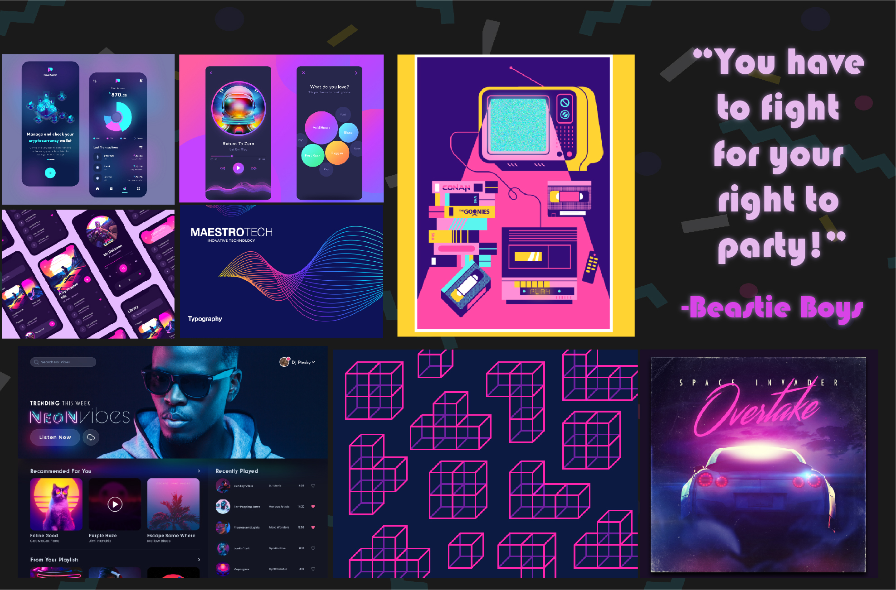
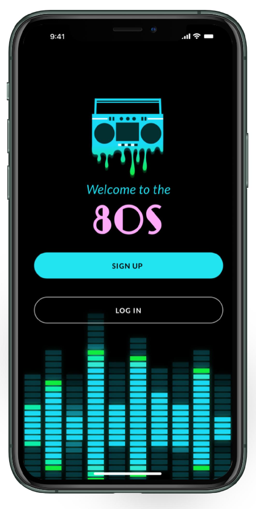
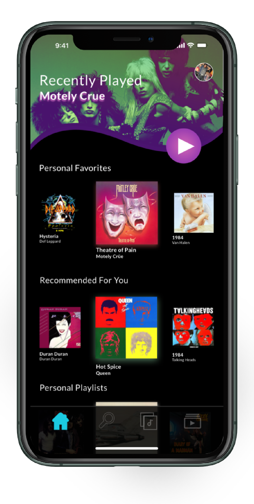
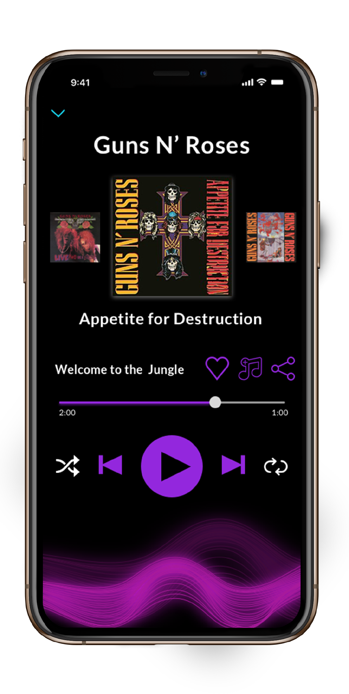
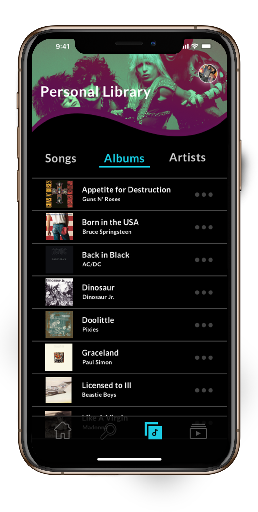
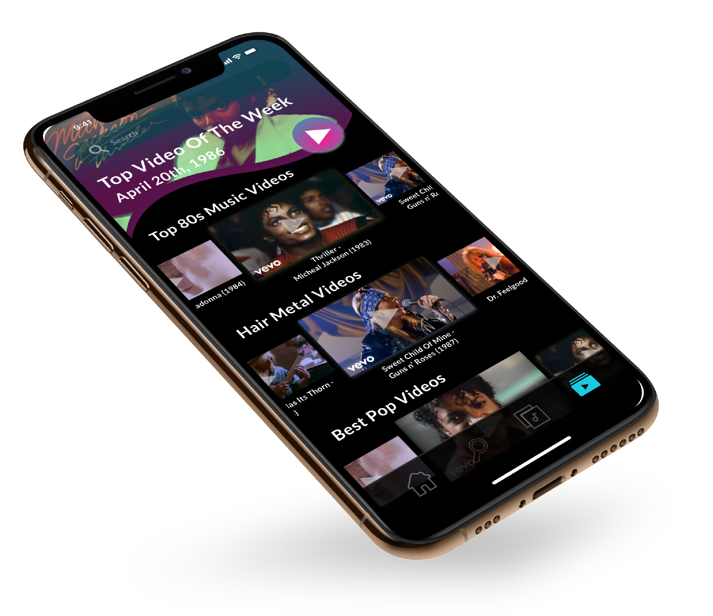

<!doctype html>
<html lang="en" dir="ltr">
<head>
<meta charset="UTF-8">
<title>Project 1 - alt</title>
<link rel="stylesheet" type="text/css" href="https://cdnjs.cloudflare.com/ajax/libs/normalize/8.0.0/normalize.min.css">
<link href="css/style.css" rel="stylesheet" type="text/css">
<link rel="preconnect" href="https://fonts.googleapis.com">
<link rel="preconnect" href="https://fonts.gstatic.com" crossorigin>
<link rel="preconnect" href="https://fonts.googleapis.com">
<link rel="preconnect" href="https://fonts.gstatic.com" crossorigin>
<link href="https://fonts.googleapis.com/css2?family=Lato:ital,wght@0,100;0,300;0,700;0,900;1,400;1,900&display=swap" rel="stylesheet">
<meta name="viewport" content="width=device-width, initial-scale=1">
<script src="https://kit.fontawesome.com/305114465b.js" crossorigin="anonymous"></script>
</head>

<body>
<header>
  <div id="navigaton">
    <div class="navtoggle" id="myNavtoggle"> <a href="index.html"></a>
      <nav>
        <ul>
          <li><a href="index.html">Work</a></li>
          <li><a href="about.html" target="_blank">About</a></li>
          <li><a href="#contact">Contact</a></li>
          <li><a href="javascript:void(0);" class="icon" onclick="menuToggle()"><i class="fas fa-bars"></i></a></li>
        </ul>
      </nav>
    </div>
  </div>
</header>
<main id="about">
  <div>
    <h1>Welcome to the 80s</h1>
    <div class="project_img_lg_2">
      <picture>
        <source srcset="img/80s_music_player/80sPortfolio_600.png" media="(max-width:767px)">
         </picture>
    </div>
    <h2>About</h2>
    <p class="smaller_para">Welcome to the 80s is music player app that brings the user back to the good old days of the 1980s. It features all of the most popular artist from the decade along with lesser known artists from that time.</p>
    <div class="container">
      <h2>Tools Used</h2>
      <div class="tools_img">
        <picture>
          <source srcset="img/trufit/tools_img_sm.png" media="(max-width:767px)">
           </picture>
      </div>
    </div>
    <div>
      <h2>Project Duration</h2>
      <p>4 weeks</p>
    </div>
    <h1>My Process</h1>
    <hr>
    <div style="background-color: white;">
      <h2>App Research</h2>
      <p>I conducted research on other music apps to see what functionality that I liked and what I wanted to add to my app. The two apps that I decided to do an analysis of is Spotify and Musi.
	  </p>
    </div>
    <div>
      <h2 style="color: #2BC716">Spotify</h2>
	  <p>When researching spotify I liked how the homepage was customized to what your previous listening session was and I liked how all of the saved songs and content was sent to the your library for easy access. Spotify enables the user to create a customize playlist very easily and that was a feature I wanted to include on my app.
	  </p>
	<h2 style="color: #EF8E2D">Musi</h2>
	  <p>A main feature in Musi that I liked that I didn’t see on spotify was music video content. The 1980s is know to have classic music videos as this was the decade of MTV so I thought this was essential feature to include.
	  </p>
	  <h2>Low - Fidelity</h2>
      <p class="smaller_para">After doing my competitive on other music player apps when I sketched the wireframes I thought of the essential functions that I wanted to includ in the app which was: the ability to add and create a playlist, search for music &amp; have a custom home page based off of previous searches.
	  </p>
      <div class="project_img_lg_2">
        <picture>
          <source srcset="img/80s_music_player/musicplayer_lofidelity_sm-01.png" media="(max-width:767px)">
         </picture>
      </div>
	  
      <h2>Mid Fidelity</h2>
      <p class="smaller_para">After I developed my low fidelity wireframes, I created my mid fidelity version to get the layout coherent and added more detail to get a better idea of what the final design was going to look like.
	  </p>
      <div class="project_img_lg_2">
        <picture>
          <source srcset="img/80s_music_player/80smusicplayer_midfidelity_sm.jpg" media="(max-width:767px)">
         </picture>
      </div>
    </div>
    <div>
      <h2>Mood Board</h2>
		<p class="smaller_para">Before creating my final screen designs I developed a mood board to see what direction I wanted to go with the colors, typography, graphics & overall aesthetics.</p>
		<div class="project_img_lg_2">
		<picture>
          <source srcset="img/80s_music_player/80sMusicPlayer_moodboard_sm.jpg" media="(max-width:767px)">
       </picture>
	  </div>
		<div class="project_img_lg_2">
	  </div>
    </div>
    <h2>Final Screen Designs</h2>
    <div class="project_img_lg">
      <picture>
        <source srcset="img/80s_music_player/musicplayer_setuppro_sm.png" media="(max-width:767px)">
         </picture>
    </div>
    <h2>Create A Profile&nbsp;</h2>
    <p class="smaller_para">User will create an account so they can save a song library and create custom playlists.</p>
    <div class="project_img_lg">
      <picture>
        <source srcset="img/80s_music_player/musicplayer_home_sm.png" media="(max-width:767px)">
         
	  </picture>
    </div>
    <h2>Personalized Home Screen&nbsp;</h2>
    <p class="smaller_para">Personalized home screen gives you recommended artists and enables you to jump right back into what you were lisenting to perviously.</p>
    <div class="project_img_lg">
      <picture>
        <source srcset="img/80s_music_player/musicplayer_visualizer_sm.png" media="(max-width:767px)">
         </picture>
    </div>
    <h2>Music Player</h2>
    <p class="smaller_para">Music Player includes a cool visualizer and the abillity to shift through entire discography at the ease of a swipe.</p>
    <div class="project_img_lg">
      <picture>
        <source srcset="img/80s_music_player/musicplayer_library_sm.png" media="(max-width:767px)">
         </picture>
    </div>
	  <h2>Personal Music Library</h2>
    <p class="smaller_para">Users can save their favorite songs and albums to build their own personal music library.</p>
	 <div class="project_img_lg_2">
      <picture>
        <source srcset="img/80s_music_player/musicplayer_musicvideo_sm.png" media="(max-width:767px)">
        </picture>
    </div>
    <h2>Music Video Player</h2>
    <p class="smaller_para">Search and watch the top music videos from the 1980s!</p>
    <h2>Key Insights&nbsp;</h2>
    <p class="smaller_para">A key insight I can take away from each stage is that there is a lot of attention to detail in a user interface that could make or break your design. From making the icons to selecting the proper design patterns there are a lot of important decisions that need to be made as you create your app and if your missing certain key elements it could lead to a lot of user error. </p>
  </div>
</main>
<footer id="contact">
  <div>
    <h2>Get in Touch</h2>
    <p> Do you like my work and want to discuss opportunities? 
      Please get in touch. Call: <a href="#">631-903-4512</a> or Skype me at blank. 
      Prefer sending an email? </p>
    <div class="container"> <a href="mailto:dcostanz93@gmail.com" class="button contact">send email</a> </div>
    <div id="social_icons">
      <ul>
      <li class="social_id"><a href="https://www.instagram.com/everyday_dom/" target="_blank"> </a></li>
      <li class="social_id"> <a href="https://www.behance.net/dominickcostanzo" target="_blank">  </a> </li>
      <li class="social_id"> <a href="https://dribbble.com/DomCostanzo" target="_blank">  </a> </li>
		 <li class="social_id"> <a href="https://www.linkedin.com/in/domcostanzo/" target="_blank">  </a> </li>
    </ul>
    </div>
    <p>Copyright Dominick Costanzo 2020-2021</p>
  </div>
</footer>
	<script
  src="https://code.jquery.com/jquery-1.12.4.min.js"
  integrity="sha256-ZosEbRLbNQzLpnKIkEdrPv7lOy9C27hHQ+Xp8a4MxAQ="
  crossorigin="anonymous"></script> 
<script src="js/scripts.js"></script>
</body>
</html>
